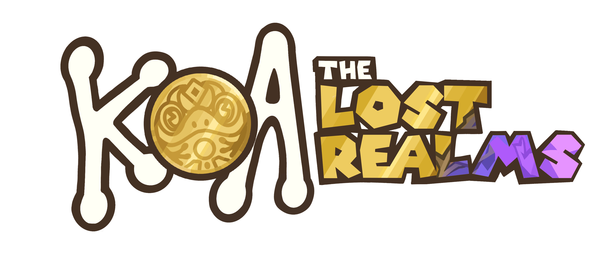
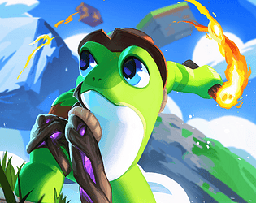
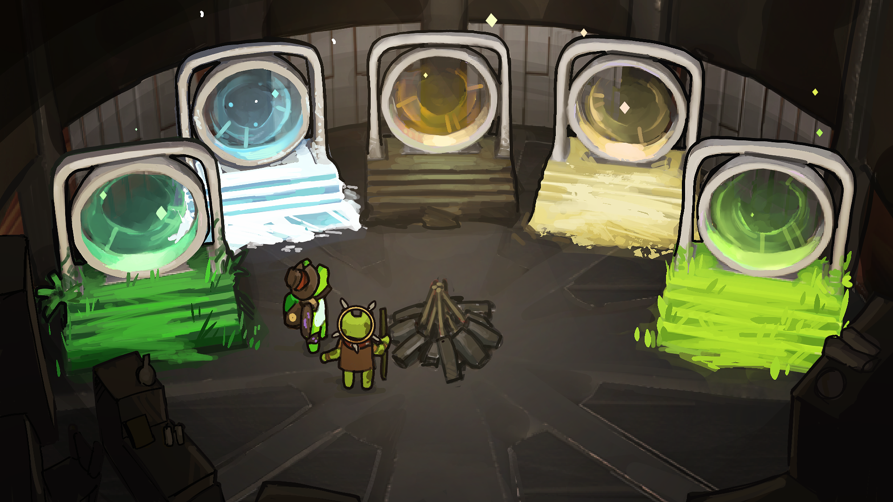
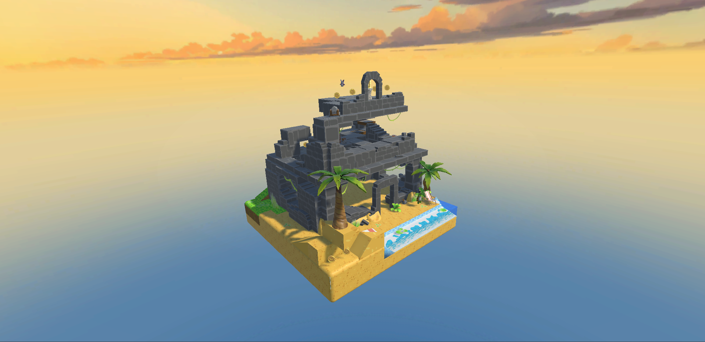
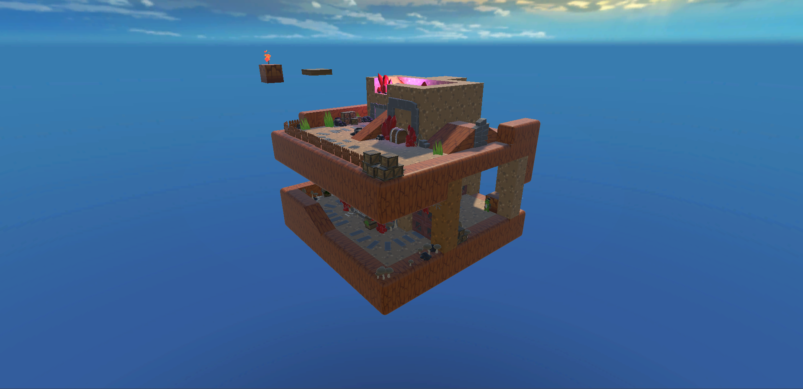
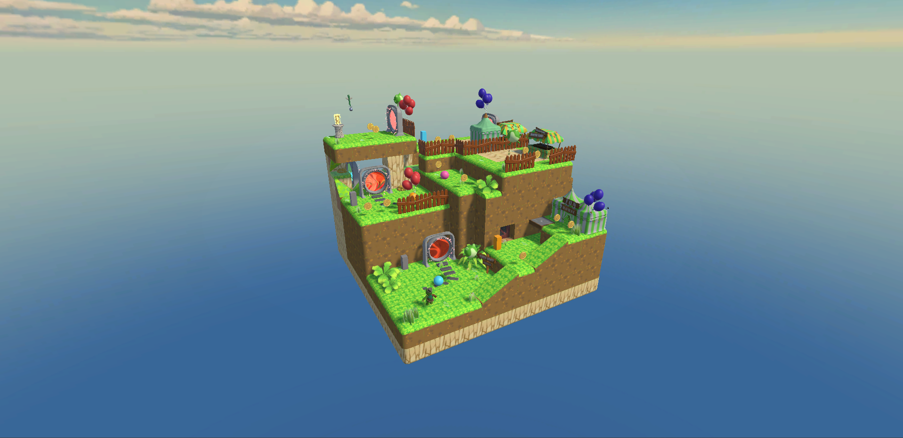
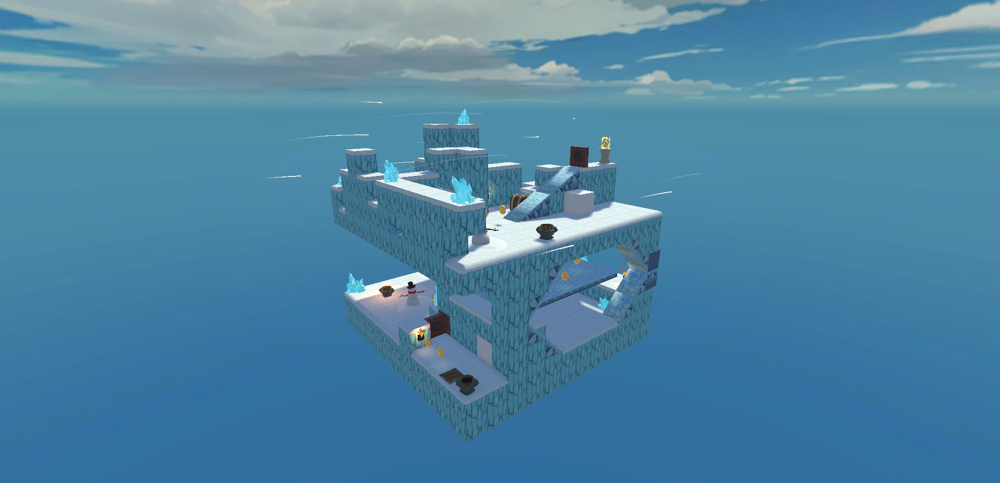
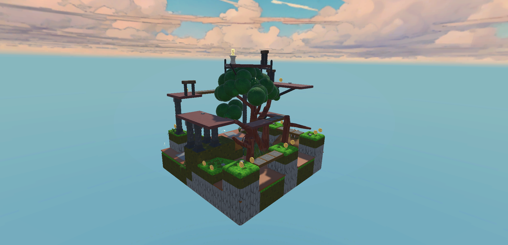

Koa: The Lost Realms
Lost civilizations. Ancient puzzles. One tiny explorer!
Koa: The Lost Realms is a puzzle-platformer created as part of an 80-student collaborative production. Set across snowy peaks, shifting sands and mossy ruins, the game follows Koa, a small frog explorer with a quick mind and a fearless heart tries to restore a forgotten kingdom before an ancient curse tears it apart.
Project Overview
Koa was developed as a large-scale university production, bringing together students across different creative and development disciplines. The project gave me experience working within a large team where individual creative work depended on communication, coordination and shared production goals.
Project Gallery
A selection of screenshots showing the concept art and a variety of biomes.








Concept & Design
I contributed to the early concept for Koa, including the decision to make the protagonist a frog. This led to one of the game's defining design constraints: Koa cannot jump
Rather than treating this limitation as a missing ability, the project explored how a platforming game could be built around a character who approaches the environment differently. Movement, puzzles and environmental interaction therefore became important parts of defining how Koa navigates the world.
Working in a Large Team
Working on an 80-student production was very different from developing my smaller solo projects. My role as Art Producer and Producer Liaison gave me experience working across creative teams and understanding how art production connects with the wider development process.
I helped coordinate creative work, communicate production needs and keep track of dependencies between different parts of the project. This gave me a practical understanding of how important clear communication and organisation are when many people are contributing to the same game.
Production & Problem Solving
A project of this scale required balancing creative ambitions with the realities of production time, resources and dependencies. Working within those constraints taught me to think about how individual tasks contribute to the wider development pipeline, and how changes in one area can affect other teams.
This experience has influenced how I approach my own projects, particularly when planning scope, communicating design requirements and considering the practical steps needed to turn an idea into a playable game.
Reflection
Koa gave me an experience that my solo projects could not: working within a large multidisciplinary team with shared responsibilities and competing production needs.
While my later projects have allowed me to take more direct ownership of design and implementation, the experience I gained on Koa has given me a better understanding of the collaborative side of game development and the importance of communication, organisation and realistic production planning.